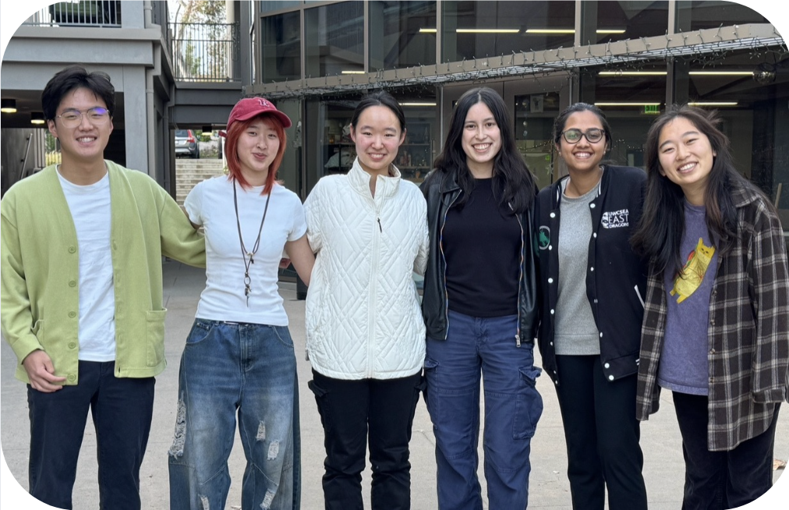

What is Code the Change
About Us
We are the Code the Change Chapter at Harvey Mudd College, a STEM-focused liberal arts college located in Claremont, California. We pair student developers with non-profits who need technological solutions but don't have the time, budget, or in-house engineering team to build them. Over a semester or summer, our student teams design and build tools — from computer vision models to data pipelines to full web apps — tailored to each partner's needs, at no cost to them. Non-profits get real software they can use, and students get to apply what they're learning to problems that matter.
